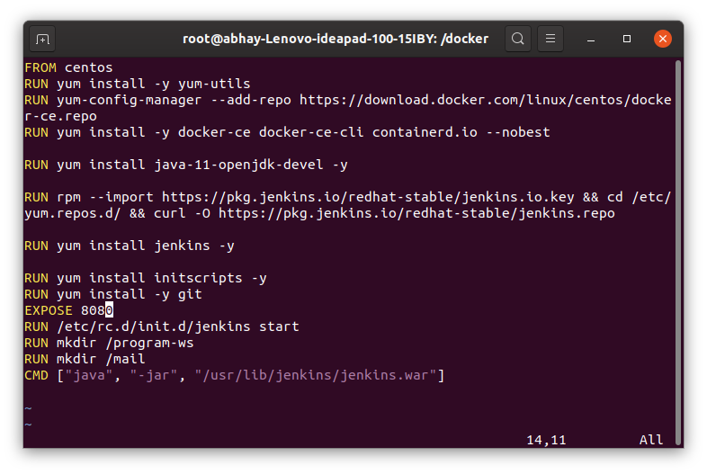
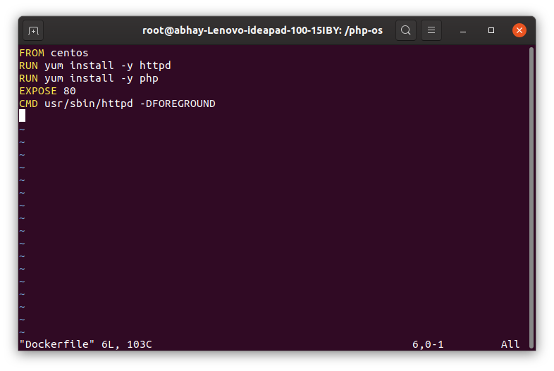
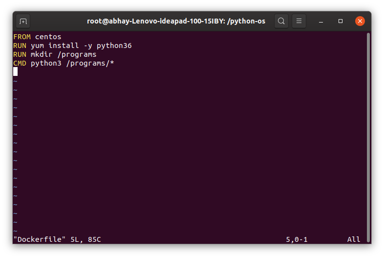

JENKINS PROJECT 2
IN THIS PROJECT WE NEED 4 IMAGES:
1. for jenkins and docker .
2. for running php code .
3. for running python code .
4. to mail the developer at the time of failure .
CREATING 1st IMAGE
-- Our first job to create the image which has jenkins installed in it and also we need docker in the same image so that docker command form jenkins works so here we need docker installed inside docker image .
-- Here is the Dockerfile to create image having docker and jenkins installed in it.

CREATING 2nd IMAGE
-- we need an image which runs our php code and also need a webserver to give web service.
-- Here is the Docker file to create image

CREATING 3rd IMAGE
-- we need an image having python installed in it .
-- Here is the Dockerfile to create image
-- we are creating directory for storing our program file

CREATING 4th IMAGE
-- we need an image having python installed in it .
-- we need a directory to store our python program to send email.
-- Here is the Docker file for creating that
RUNNING JENKINS IMAGE
-- we need to connect docker socket of baseOS to jenkins os so that docker uses baseos docker
-- we need to connect volume jenkins_data to save all our jenkins data
-- we need to connect mail folder so that python code in base os should reached to os which is sending mail.

CREATING JOB1
-- Now we will create our job1 and provide github repo link to it

-- then we will copy our data to program-ws folder we created at the time of building image.

CREATING JOB2
--we will now create job2 which will check the filetype and according to that it will start image of that type

CREATING JOB3
-- Now we need to create job3 which will check whether the webserver is running or not .
-- If it is not working then it will start mail image which will python code to send mail to developer.

CREATING JOB4
-- we need our final job which will monitor our container if it is not running then it will run them again
-- we will set this job to be run every minute by option called POLL SCM

-- these are 4jobs we have created :

NOW WE JUST HAVE TO RUN OUR FIRST JOB OR WE CAN TRIGGER 1st JOB FROM GITHUB.